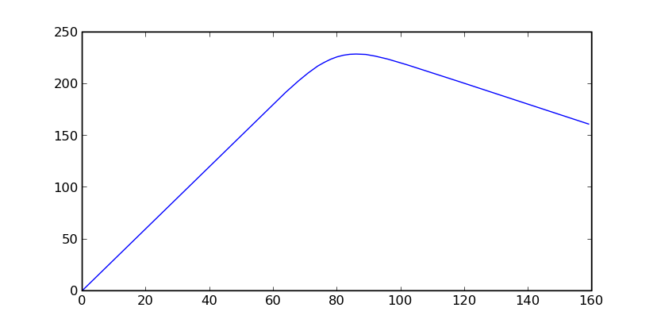
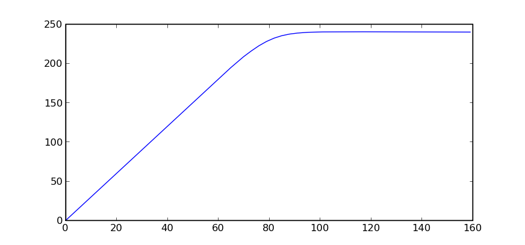
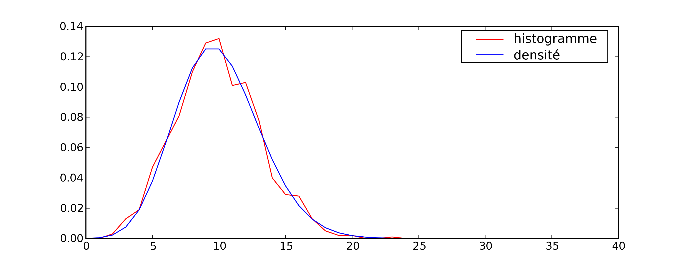
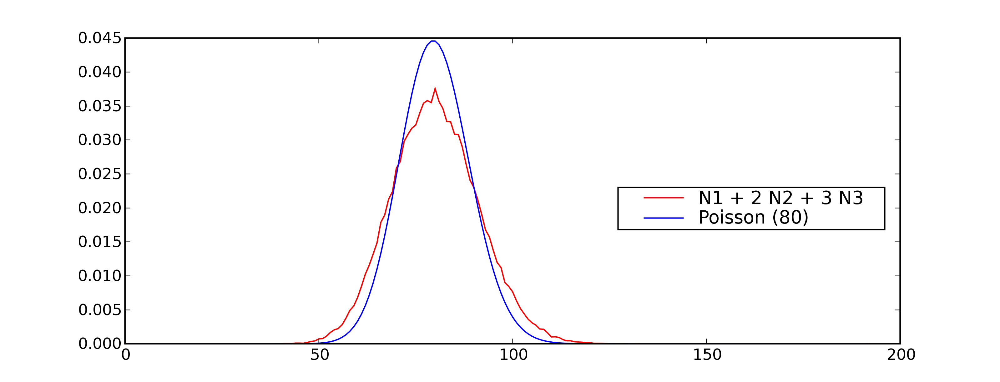
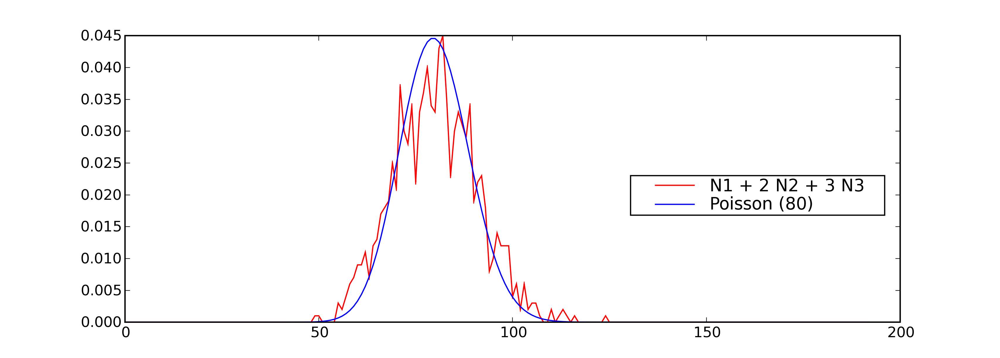

Optimisation avec données aléatoires#
Un problème simple#
Un supermarché pourrait vendre en moyenne 80 poulets par semaine s’il pouvait savoir à l’avance combien de poulets à acheter pour satisfaire la demainde. En réalité, le magasin se réapprovisionne une fois par semaine et lorsque la fin de la semaine arrive, tous les poulets invendus sont soldés et supposés vendus. Le gérant du supermarché voudrait savoir quel est le nombre optimal de poulets à commander chaque semaine. On suppose que le prix d’un poulet à l’achat est \(p\), son prix à la vente est \(q>p\), son prix soldé est \(s\). Admettons que le supermarché achète \(X\) poulets, en vende au mieux \(N\) non soldés et \(X-N\) soldés s’il en reste. Pour calculer son bénéfice \(B\), il faut tenir compte de deux cas et du fait que le supermarché ne peut pas vendre plus de poulets qu’il n’en a acheté :
On peut réduire ces deux expressions à une seule en utilisant la fonction indicatrice :
Si \(N\) était connu avec certitude, il suffirait de choisir \(X=N\), ce serait la réponse optimale mais le nombre de poulets \(N\) vendus est inconnu car il varie chaque semaine. Pour avoir une idée plus précise, le gérant du supermarché a délibérément acheté trop de poulets pendant plusieurs semaines. Il s’est aperçu que la variable aléatoire \(N\) suit une loi de Poisson de paramètre \(\lambda = 80\). On connaît seulement la probabilité que \(N\) soit égale à une valeur fixée. La figure suivante montre l’allure de cette distribution.

Ce graphe répresente la fonction de densité d’une loi de Poisson de paramètre 80. On observe que le pic est obtenu pour une valeur proche de 80, c’est la valeur la plus probable. Ceci signifie que le nombre de poulets achetés le plus probable est 80.
Comme le nombre de poulets achetés varie d’une semaine à l’autre, le bénéfice du supermarché varie aussi d’une semaine à l’autre. Ce que le gérant veut optimiser, c’est la somme de ses profits sur une année ce qui est équivalent à maximiser la moyenne de ses profits chaque semaine. Il faut donc chercher à maximiser l’espérence de la variable aléatoire \(B\) à \(p,q,s\) constant puis à obtenir la valeur \(X\) ayant mené à ce maximum.
Etant donné la forme de la fonction \(f\), il n’est pas évident de construire une expression exacte de \(X^*\) défini par \(\max_X \esp{f(N,X,p,q,s)} = f(N,X^*,p,q,s)\). Comme \(l=80\), d’après la figure précédente, on cherche \(X^*\) dans l’ensemble \(\acc{0,...,2l=180}\), aller au delà de 180 est inutile tant la probabilité est faible. Il suffit de calculer \(f\) pour chacune de ces valeurs et de prendre celle qui permet d’obtenir le maximum. Ces calculs longs et répétitifs vont être effectués par un programme informatique qui sera découpé en fonctions comme ceci :
fonction |
objectif |
|---|---|
calcule \(x!\) |
|
calcule la fonction \(f\) |
|
calcule la probabilité de Poisson connaissant \(\lambda\) et \(i\) |
|
calcule l’espérance (sa moyenne) de la fonction \(f\) |
|
construit une liste de toutes les valeurs de \(f`\) |
|
cherche le maximum dans la liste retournée par la
fonction |
Le programme obtenu ressemble à poulet.py,
les dernières lignes servent à tracer la courbe présentée par la figure qui suit.
<<<
from mlstatpy.garden.poulet import maximum
res = maximum(2, 5, 1, 80)
# res est la courbe affichée plus bas
print(res[:4])
>>>
[(0, 0.0), (1, 2.9999999999999942), (2, 5.9999999999999885), (3, 8.999999999999975)]
|  |  |
Cette courbe est celle de l’évolution des profits en fonction du nombre de poulets commandés. On suppose que le nombre de poulets achetés suit une loi de Poisson de paramètre 80, que les poulets sont achetés 2 euros, revendu 5 euros et soldés 1 euros. Le maximum de 228 euros est obtenu pour 86 poulets. La seconde courbe montre le résultat dans le cas où les poulets soldés sont vendus 2 euros égal au prix des poulets achetés. Le modèle montre ses limites dans ce cas car il suppose que tous les poulets soldés seront achetés et que les contraintes de stockage sont négligeables.
Modélisation de la demande#
La représentation de la demande est essentielle, c’est elle qui détermine le résultat. Il est possible de l’affiner comme par exemple supposer que certaines personnes achètent deux ou trois poulets et que la somme des poulets achetés peut être décomposée comme \(N = N_1 + 2N_2 + 3N_3\) où \(N_i\) est le nombre de personnes achetant \(i\) poulets. Dans ce cas, ce n’est plus \(N\) qui suit une loi de Poisson mais \(N_1\), \(N_2\), \(N_3\) qui suivent chacune des lois de Poisson de paramètres différents dont il faudra estimer les paramètres.
Cette modification implique l’écriture d’une fonction
proba_poisson_melange
au lieu de proba_poisson.
La demande n’est plus une loi connue mais un mélange de lois connues
dont la densité n’a pas d’expression connue : il faut la tabuler.
Pour cela, on utilise deux propriétés sur les lois exponentielles.
Théorème T1 : simulation d’une loi quelconque
Soit \(F=\int f\) une fonction de répartition de densité \(f\) vérifiant \(f > 0\), soit \(U\) une variable aléatoire uniformément distribuée sur \(\cro{0,1}\) alors \(F^{-1}(U)\) est variable aléatoire de densité \(f\).
La démonstration est courte. Soit \(X\) une variable aléatoire de densité \(f\), par définition, \(\pr{X \infegal x} = F(x)\). Soit \(U\) une variable aléatoire uniformément distribué sur \(\cro{0,1}\), alors :
Si la fonction \(F\) n’est pas strictement croissante, on pourra prendre \(F^{-1}(t) = \inf\acc{ u \sac F(u) \supegal t}\). Ce théorème sera appliqué à une loi exponentielle de paramètre \(\lambda\). La densité d’une telle loi est \(f(x) = \lambda \exp{- \lambda x}\), \(F(x) = \int_0^x f(t)dt = 1 - \exp^{- \lambda x}\). On en déduit que \(F^{-1}(t) = -\frac{ \ln(1-t)}{\lambda}\), par conséquent : \(-\frac{ \ln(1-U)}{\lambda}\) suit une loi exponentielle de paramètre \(\lambda\) si \(U\) est une loi uniforme sur \(\cro{0,1}\).
Théorème T2 : simulation d’une loi de Poisson
On définit une suite infinie \((X_i)_i>0\) de loi exponentielle de paramètre \(\lambda\). On définit ensuite la série de variables aléatoires \(S_i = \sum_{k=1}^{i} X_k\) et enfin \(N(t) = \inf \acc{ i \sac S_i > t}\). Alors la variable aléatoire \(N(t)\) suit une loi de Poisson de paramètre \(\lambda t\).
La loi exponentielle est souvent utilisée pour modéliser le temps d’attente d’un événement comme le temps d’attente d’un métro une fois sur le quai. On l’utilise aussi pour modéliser la durée de vie d’un outil, d’une ampoule par exemple. La loi de Poisson peut par exemple modéliser le nombre d’ampoules nécessaire pour éclairer une pièce sur une certaine durée. Avant de démontrer le théorème, il faut définir d’abord la loi Gamma. On pose au préalable \(\Gamma(\alpha) = \int_0^{\infty} u^{\alpha-1}e^{-u}du\). Une variable aléatoire de loi Gamma de paramètres \(\pa{\alpha,\lambda}\) a pour densité : \(f(x) = \frac{\lambda^{\alpha}} {\Gamma(\alpha)}t^{\alpha-1}e^{-\lambda t}\). La fonction \(\Gamma\) vérifie une propriété utile par la suite : \(\forall n \in \N^*, \, \Gamma(n) = (n-1)!\).
Théorème T3 : somme de loi exponentielle iid
Soit \(X_1,...,X_n\) \(n\) variables aléatoires indépendantes et identiquement distribuées de loi \(Exp(\lambda)\) alors la somme \(\sum_{k=1}^n X_k\) suit une loi \(Gamma(n,\lambda)\).
La démonstration utilise l’unicité de la fonction caractéristique \(\esp{e^{iX}}\). Il suffit de démonstrer que la fonction caractéristique de la somme est celle d’une loi Gamma. On suppose que \(X_1,...,X_n\) suivent des lois exponentielles de paramètre \(\lambda\) et \(Y\) suit une loi \(Gamma(n,\lambda)\).
Ces lignes démontrent le théorème. On démontre maintenant simulation d’une loi de Poisson. La démonstration repose sur le fait que \(\pr{N(t) \supegal n} \Longleftrightarrow \pr{S_n \infegal t}\). On en déduit que :
Or d’après le théorème somme de loi exponentielle iid, \(S_n\) suit une loi \(Gamma(n,\lambda)\).
Il suffit d’utiliser ce théorème pour simuler une loi de Poisson de
paramètre \(\lambda\), ce que fait la fonction
poisson suivante :
<<<
import random
import math
def exponentielle(l):
u = random.random()
return -1.0 / l * math.log(1.0 - u)
def poisson(l):
s = 0
i = 0
while s <= 1:
s += exponentielle(l)
i += 1
return i - 1
print(poisson(2))
>>>
0
On vérifie que cette méthode de simulation permet de retrouver les résultats théoriques. Pour cela, on effectue 1000 tirages d’une variable suivant une loi de Poisson avec \(\lambda=10\) puis on compte le nombre de fois qu’on obtient chaque entier compris entre 0 et 40. La figure qui suit permet de comparer les résultats obtenus.
Comparaison entre une fonction de densité estimée empiriquement pour la loi de Poisson de paramètre \(\lambda=10\) et sa densité théorique \(f(i) = e^{-\lambda} \frac{ \lambda^i}{i!}\).
On cherche maintenant à calculer les probabilités
\(\pr{N = i}\) sachant que \(N = N_1 + 2 N_2 + 3 N_3\)
et \(N_1 \sim \mathcal{P}(48)\), \(N_2 \sim \mathcal{P}(10)\),
\(N_3 \sim \mathcal{P}(4)\). L’addition de deux lois de Poisson
indépendantes est une loi de Poisson. En revanche, si \(N_1\)
suit une loi de Poisson, \(2N_1\) ne suit pas une loi de Poisson.
\(2N_1\) est une variable paire, c’est une propriété qui n’est
jamais vérifiée par une loi de Poisson.
Il n’existe pas d’expression évidente pour la densité du mélange \(N\),
il faut donc simuler cette variable. C’est l’objectif de la fonction
poisson_melange.
De la même manière, on estime l’histogramme du mélange avec cette fois-ci
un plus grand nombre de tirages (10000) pour aboutir
à la figure suivante.
|  |  |
Comparaison entre une fonction de densité estimée empiriquement pour un mélange de loi Poisson \(N = N_1 + 2 N_2 + 3 N_3\) vérifiant \(N_1 \sim \mathcal{P}(48)\), \(N_2 \sim \mathcal{P}(10)\), \(N_3 \sim \mathcal{P}(4)\) avec la densité de la loi de Poisson de paramètre \(\lambda=80=48+2*10+3*4\). Il apparaît que ce sont deux densités différentes, celle du mélange étant plus applatie. La seconde image montre ce qu’on obtient lorsque le nombre de tirages n’est pas assez important.
On utilise ces éléments pour modéliser la demande de poulets selon ce mélange de lois Poisson. Le premier programme est modifié pour aboutir au suivant.

Dans le cas du mélange de lois Poisson, le maximum est cette-fois ci obtenu pour 87 poulets et est de 225 euros. Ces résultats sont légèrement différents de ceux obtenus par une simple loi Poisson (80).
Variations saisonnières et prolongations#
Les paragraphes précédents supposent que la demande est constante et ne dépend pas des saisons. Cette affirmation est peut-être vraie en ce concerne les poulets mais ce n’est certainement pas le cas des huîtres qui sont traditionnellement consommées en décembre. Appliqué à l’exemple des poulets décrits dans cet énoncé, la loi de Poisson appliquée à la consommation dépend maintenant de la semaine.
Tenir compte de la saisonnalité n’est pas forcément un problème de modélisation mais plutôt d’estimation. Au lieu d’avoir une seule consommation moyenne, il y a en aura maintenant 52. Ceci implique d’avoir des données en nombre suffisant pour estimer les paramètres du modèle : la précision des résultats dépend de celle de l’estimation. Il est possible d’estimer séparément les variations saisonnières et la demande elle-même mais la présentation de ces techniques dépassent le cadre de ce livre, il est préférable de se reporter à [Gouriéroux1983] ou [Saporta2006].
Les poulets soldés ne sont pas plus mauvais que les poulets non soldés bien que la date de péremption soit certainement plus rapprochée de la date d’achat. On suppose qu’un gérant concurrent de ce supermarché a eu vent de la technique d’optimisation du magasin, il connaît également le prix du poulet et son prix soldé. Il a également accès au prix d’achat puisqu’il se fournit chez les mêmes agriculteurs. Il lui reste à connaître le nombre de poulets commandés et une estimation de la demande pour savoir si les poulets de son concurrents se vendent mieux que les siens. Il se rend dans le supermarché concurrent tous les jours où les poulets sont soldés et les comptent. Il voudrait pouvoir en déduire le nombre de poulets vendus.
Bibliographie#
Analyse des séries temporelles, Christian Gouriéroux, Alain Monfort, Editions Economica
Probabilités, analyse des données et statistique, Gilbert Saporta, Editions Technip